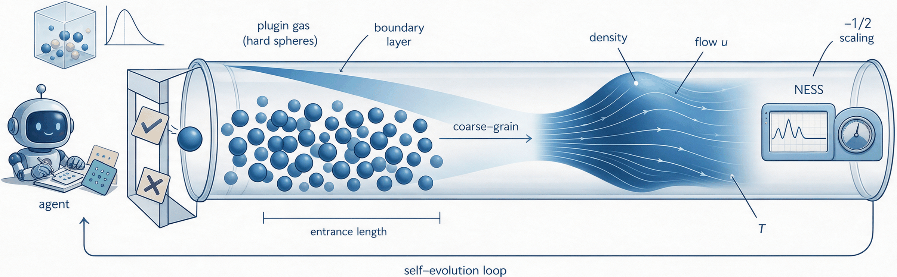
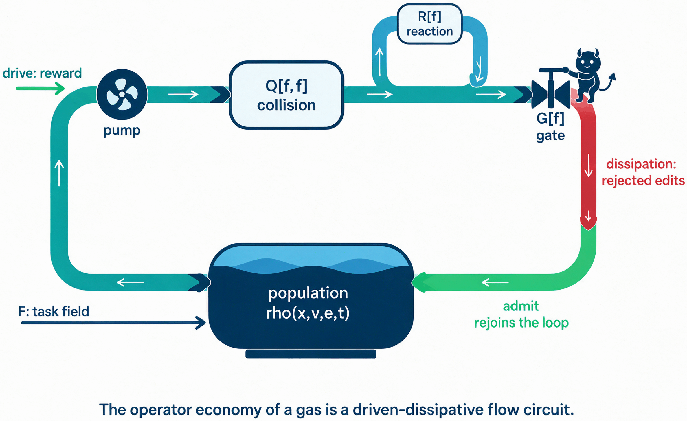
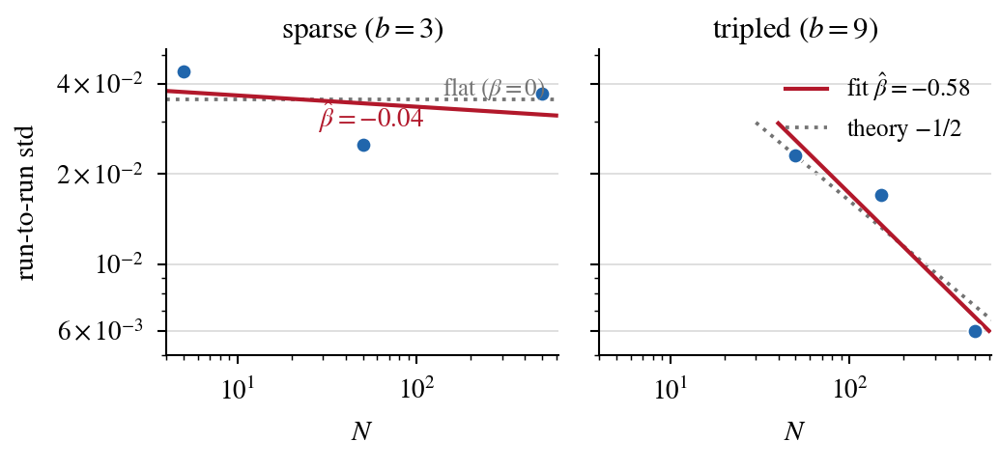
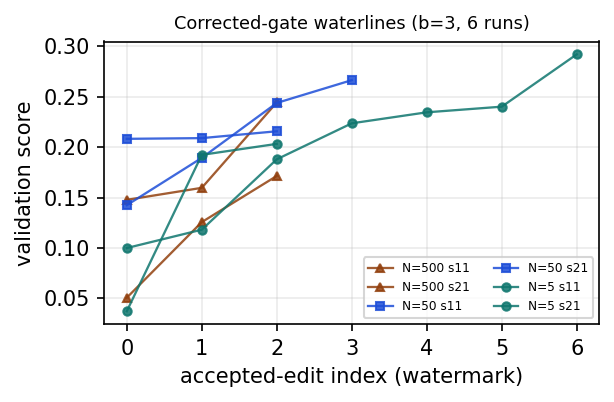

The hitting-time certificate (Theorem A) and a fluctuation-variance special case are machine-checked in Lean, with Lean sources released in the supplementary material.
Abstract
We find traces of fluid dynamics in the self-evolution of an LLM agent, and give the kinetic theory that predicts them. Gated self-evolution is the loop in which an agent rewrites its own skills under a validation gate. Self-evolution research has treated the agent as the unit; we study instead the individual instances inside it. Here the agent is DSH-plugin-based: it runs in production on DeepSeek Harness (DSH), and its plugins satisfy four architectural properties (permutation symmetry, reversibility, acyclicity, typed contracts), which license treating these instances as identical hard spheres; the theory is accordingly scoped to DSH-class plugin populations. On this scope the paper builds three theory layers. The rigorous layer, independent of any analogy, comprises an any-time hitting-time certificate bounding the expected rounds to any prescribed improvement, a resolution law that prices held-out validation budgets, and a separation theorem: the daemon must stay outside the population, because merging evaluator with evaluated voids the certificate. The kinetic layer is a master equation over the plugin x version x task grid with four operators (collision, reaction, external field, gate), where collision is co-activation. Its moment hierarchy, the step that turns a gas into fluid equations, generates the falsifiable statistical signatures. Throughout, the fluid reading is a bounded analogy: momentum is not conserved, so no Navier-Stokes limit exists. The measured layer runs on a faithful minimal instance, a large library of four-parameter skill plugins retrieved one per episode with a co-activation probe, in a one-model, one-task-family WebShop environment; every element maps to the DSH loop by architectural role. Population fluctuation scaling is density-gated: invisible at sparse edit density, it emerges at the predicted rate under tripled density, as directional evidence.
Problem
Self-evolving LLM agents rewrite their own skills under a validation gate, and their population-level statistics lack a predictive theory. The authors model the plugin-version instances inside a DSH-based agent registry as a gas of hard spheres.
Approach
Four architectural axioms of DSH plugins (permutation symmetry, reversibility, acyclicity, typed contracts) license a kinetic master equation with collision, reaction, external-field and gate operators. A rigorous layer gives a hitting-time certificate bounding the expected number of rounds to a target improvement, a resolution law for validation budgets, and a separation theorem that keeps the evaluator outside the population. The certificate is machine-checked in Lean. Predictions are tested on a minimal WebShop instance with four-parameter skill plugins.

Figure 1: Graphical overview of the proposed kinetic theory: the self-evolution run of a gated LLM agent, interpreted through the framework of fluid mechanics.

Figure 3: The driven-dissipative circuit of the operators. Reward drives the pump into the collision chamber Q[f,f] (fed by the shared experience database), the reaction loop R[f] mutates species, the gate valve G[f] admits improving candidates and drains rejected edits, and the population tank \rho(x,v,e,t) rejoins the loop; F is the external task field. Drive–dissipation balance at the valve is
Results
Fluctuation scaling is flat at sparse edit density (β̂=-0.04) and reaches β̂=-0.58 at tripled density, close to the predicted -1/2, which the authors report as directional evidence. A collision probe gives a fan-3 final score of 0.495 versus 0.301 for fan-1.

Figure 6: Density-gated scaling (corrected gate). Points: per-arm standard deviations of the two seed finals (records: Appendix C ). Left: sparse density, flat \hat{\beta}=-0.04 . Right: tripled density, CLT emerges at \hat{\beta}=-0.58 vs. -1/2 .

Figure 8: Device traces. Left: six b{=}3 validation waterlines (near-additive, deviations {\leq}0.024 ). Right: collision probe—fan-3 final 0.495 vs. fan-1 0.301 (formal9).